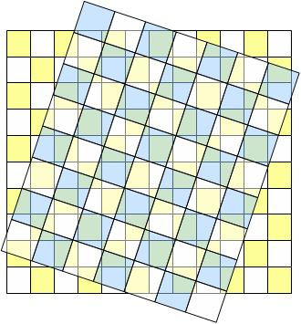
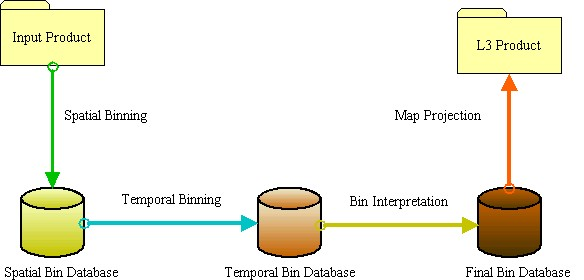
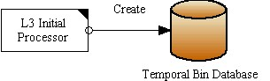
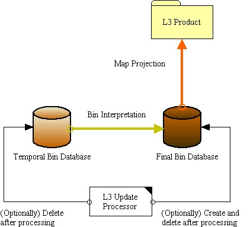

| Level 3 Binning Processor |
|
The BEAM Level 3 Binning Processor is based on two different algorithms:
An algorithmic description of the processor can be found here.
Additionally to the original algorithm, this implementation gives the user the ability to:
The term binning refers to the process of distributing the contributions of Level 2 pixels in satellite coordinates to a fixed Level 3 grid using a geographic reference system. In most cases a sinusoidal projection is used to realize Level 3 grid comprising a fixed number of equal area bins with global coverage. This is for example true for the SeaWiFS Level 3 products.
As long as the area of an input pixel is small compared to the area of a bin, a simple binning is sufficient. In this case, the geodetic center coordinate of the Level 2 pixel is used to find the bin in the Level 3 grid whose area is intersected by this point. If the area of the contributing pixel is equal or even larger than the bin area, this simple binning will produce composites with insufficient accuracy and visual artefacts such as Moiré effects will dominate the resulting datasets.
The following figure illustrates this problem.

Level 2 grid (blue) and Level 3 grid (yellow)
The blue chessboard grid refers to the input data, the yellow one refers to the final Level 3 grid. As the figure clearly shows, single Level 2 pixels cannot be uniquely be assigned to single bins.
In this case the contributions of each Level 2 pixel has to be distributed over multiple overlapping bins in order to conserve the total contributions of Level 2 pixels. The contribution-conserving problem reduces to finding the set of Level 3 bins overlapped by each Level 2 pixel and then calculating the overlap areas. The total contribution in the bin is then the sum of contributions from the overlapped pixels.
In contrast to the SeaWiFS binning that operates on an equal area sinusoidal grid the flux-conserving resampling uses an equal area longitude-latitude grid.
Due to the complexity of the processing and to give the user a maximum flexibility, this scientific tool includes four specialized tools.

This complete set of operations, including all necessary cleanup operations, is performed by the L3 Processor. The specialized processors (Init, Update and Final) perform only a subset of the operations.
The L3 Initial processor merely creates the Temporal Bin Database and stores all processing parameters in the database.

The L3 Update processor accumulates all input products assigned. It

The L3 Final Processor creates the final L3 product. It performs the following steps:
